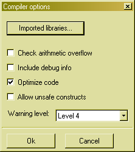
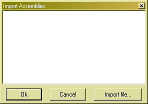

Edit compiler options

In this form you can enter compiler options. You can specify if the compiler should check for arithmetic overflow, include debug info, optimize code or allow unsafe constructs. You can also specify one of five warning levels to tell the compiler what warning messages it should produce. You also need to tell the compiler which libraries to import. You do this by pressing the Import libraries... button. The following dialogbox appears:

Here you can type in the libraries you want to import.